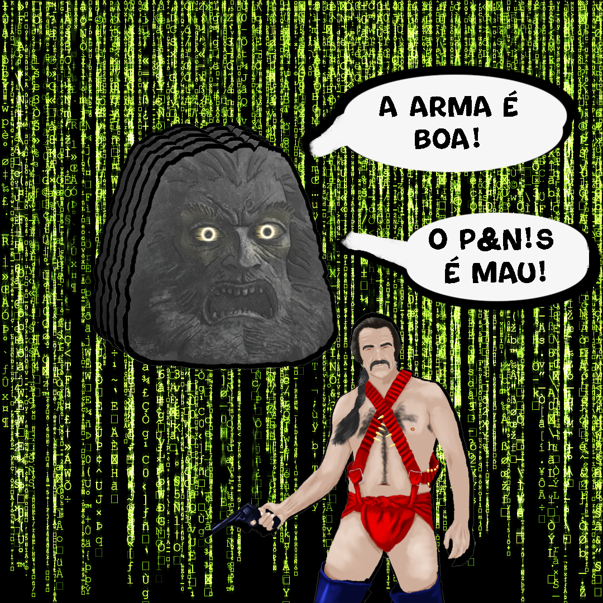

Zardoz, Pulsões e o Mito do Controle: Uma Leitura Simbólica

Em um dos momentos mais marcantes e desconcertantes do cinema distópico dos anos 70, o filme Zardoz (1974), dirigido por John Boorman, nos entrega uma frase tão absurda quanto profundamente simbólica: "A arma é boa! O p3n1s é mau!". A frase, dita por uma figura de autoridade — o próprio “deus” Zardoz —, revela mais do que apenas um capricho estético bizarro. Ela abre espaço para uma reflexão crítica sobre pulsões humanas, repressão, e a forma como símbolos são manipulados para manter estruturas de poder.
A Arma como Objeto de Poder e Pulsão de Morte
No universo de Zardoz, os "brutais" — humanos marginalizados e manipulados — recebem armas como dádivas, como algo "bom". Mas o que está sendo celebrado nesse gesto? A arma não é apenas um instrumento de combate; ela simboliza a pulsão de morte (Thanatos, em termos freudianos), representando o impulso destrutivo canalizado para a manutenção da ordem social. A violência, nesse contexto, é não só tolerada como sacralizada. A arma, então, deixa de ser uma ferramenta neutra e passa a representar um instrumento simbólico de repressão. Sua entrega aos brutais não é apenas uma concessão de poder, mas um método de controle: eles a utilizam cegamente, de forma inquestionável, servindo aos interesses de uma elite que permanece oculta e intocada.
O Medo como Mecanismo de Controle
Esse uso da pulsão de morte não é aleatório. Ele se articula como um projeto deliberado de repressão e dominação. O medo se torna o motor do comportamento coletivo. A repressão dos desejos criativos e sexuais, a supressão do prazer e do caos transformador, são substituídos por uma lógica de obediência e violência. Assim, o controle social se estabelece através do temor, e o impulso destrutivo é legitimado como necessário para a paz.
O P3n1s como Símbolo Subvertido
Quando Zardoz afirma que o p3n1s é "mau", não está apenas atacando o órgão em si, mas o que ele simboliza: a sexualidade, a procriação, o prazer, a união — em suma, a pulsão de vida (Eros). A sexualidade, que poderia ser fonte de criatividade, conexão e transformação, é vilanizada e reprimida. Esse gesto representa uma subversão simbólica potente: o que é natural e gerador de vida é ressignificado como ameaçador. O p3n1s, enquanto representação do desejo, do prazer e do caos criativo, é apresentado como algo a ser temido e controlado. A repressão do desejo se torna um pilar central na construção da distopia zardoziana.
Conclusão: A Máquina da Repressão e a Ilusão da Ordem
Zardoz nos propõe um espelho distorcido, mas revelador, das dinâmicas de poder que operam tanto no nível simbólico quanto prático. A troca do desejo pela repressão, da criação pela destruição, e da liberdade pelo controle, não é apenas ficção: é uma crítica feroz à forma como sociedades podem instrumentalizar símbolos para justificar a opressão. A frase “A arma é boa, o p3n1s é mau” não é apenas grotesca — é um manifesto ideológico disfarçado de dogma. E como todo dogma, deve ser desafiado. Resta a nós, espectadores e sujeitos, desvelar os símbolos, questionar os sistemas e reapropriar o que é nosso: a pulsão de vida, o desejo, a criação.
"Que conste nos autos que isso não passa de uma ficção utópica, ok?"